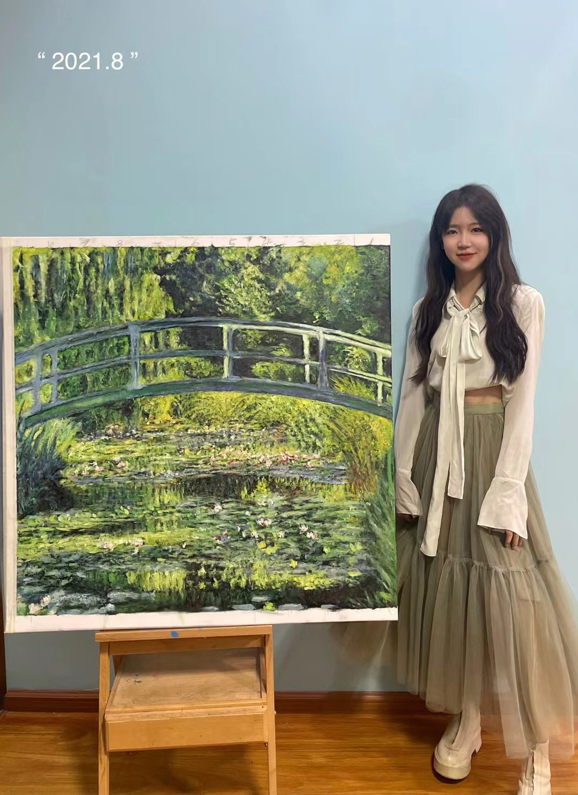

Waterlilies Reimagined
A tribute to my artistic roots. Inspired by Monet, this 1m × 1m painting took nearly a year to complete, I felt as stepped into his garden, experiencing the shifting hues of water.


A tribute to my artistic roots. Inspired by Monet, this 1m × 1m painting took nearly a year to complete, I felt as stepped into his garden, experiencing the shifting hues of water.